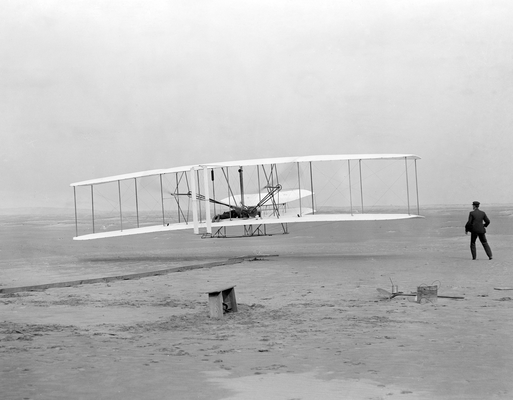

The Revolutionary Airplane
Life before the airplane was quite different. Unfortunately no one can really appreciate how much it has helped our society because it has been around long before most of us were born. None the less, the airplane has helped the human race connect and excel on a global level.
Before the invention of the airplane, things were done much differently. City's were connected by railroads, and the travel time from one side of the country to the other could take several weeks to months. Not to mention it was extremely costly. Going oversees was a huge mission, and could be a very dangerous one due to lack of technology on reading weather systems. It is safe to say that world had to made a change to become more efficient in our travels.
In 1903, the first airplane was invented by the Wright brothers. By 1914, the first commercial flight was conducted. After this the sky was the limit!
Travel times were cut down exponentially. Goods could be transported much faster. International travel became a reachable reality for more people then just the rich. Society was now able to connect in a way it never had before.